As expectativas estão razoavelmente altas e o período pós pandemia anda bem próspero, tivemos vários avanços e o futuro apenas promete mais. A geração de empregos anda alta e o mercado inclusivo, muitos trabalhos especializados tem sido gerados pois a oferta de mão de obra está alta graças a uma eficiente educação, o que ainda por cima gera novos avanços, a produtividade anda alta e a sustentabilidade anda alta. No geral o mercado mundial anda bem atrativo não só para novos empreendedores como para novos trabalhadores, fruto das melhorias da condição de trabalho e avanços na segurança social. Várias nações tem contribuido pra esses avanços e são grandes exemplos a serem seguidos, e outras estão em ascensão e aqui exemplificaremos algumas e poderemos ter uma visão do que devemos esperar.
Países em Ascensão: O que poderemos esperar?
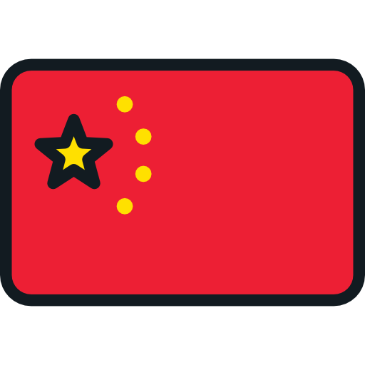
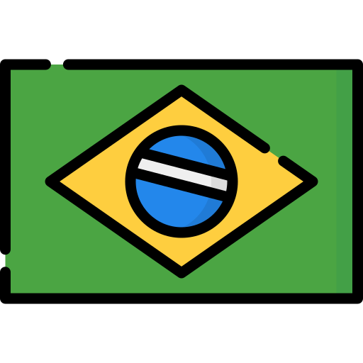
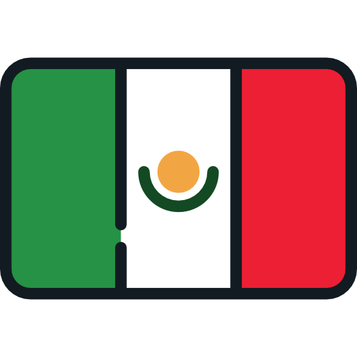
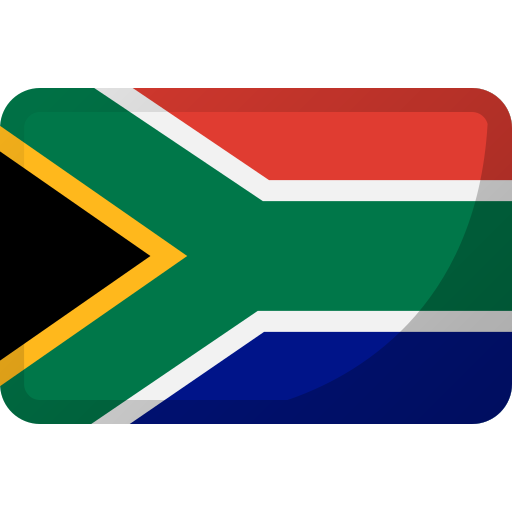
1. Índia
A Índia, como uma das economias mais populosas e em rápido crescimento, apresenta grandes expectativas de avanços no ODS 8, especialmente devido ao seu foco em transformação digital, inovação e criação de emprego em setores como tecnologia e energias renováveis.
Transformação Digital e Tecnologia: A Índia tem sido um hub crescente de tecnologia, com a indústria de TI e startups desempenhando um papel central no crescimento econômico. Espera-se que o país aproveite sua força de trabalho jovem e tecnológica para se tornar um líder global em tecnologia da informação, inteligência artificial (IA) e digitalização.
Crescimento Sustentável e Economia Verde: A Índia está investindo fortemente em energias renováveis, especialmente energia solar, e tem o objetivo de reduzir sua dependência de combustíveis fósseis, promovendo novos empregos sustentáveis.
Desafios Sociais: Embora o país ainda enfrente desafios com desigualdade de gênero e informalidade no trabalho, há uma crescente atenção ao empoderamento feminino e ao fortalecimento das redes de proteção social.
2. China
A China tem um grande potencial para avanços no ODS 8, dada a sua liderança em indústria, inovação tecnológica e políticas de crescimento verde.
Inovação Tecnológica: A China continua a ser uma das líderes globais em inteligência artificial, automação e 5G, e espera-se que o país continue a expandir esses setores, criando novos empregos de alta tecnologia.
Crescimento Verde: A China está focada em se tornar uma economia de baixo carbono, com ambições de neutralidade de carbono até 2060 e investimentos em energias renováveis e tecnologias limpas, o que criará oportunidades de emprego sustentável em diversos setores.
Reformas Trabalhistas: A China também está implementando reformas trabalhistas para melhorar as condições de trabalho, especialmente para trabalhadores informais e migrantes, e para reduzir as disparidades regionais e de gênero.
3. Brasil
O Brasil tem o potencial de fazer avanços significativos em relação ao ODS 8, com suas políticas focadas na inclusão social, qualificação profissional e transição para a economia verde.
Economia Verde e Sustentável: O Brasil é um líder em agricultura sustentável e tem um grande potencial no setor de energias renováveis, especialmente energia solar e biocombustíveis, criando uma fonte de novos empregos sustentáveis.
Reformas Trabalhistas e Inclusão Social: Embora o Brasil ainda enfrente desafios em termos de informalidade no trabalho e desigualdade de gênero, espera-se que haja avanços significativos nas políticas de qualificação profissional, especialmente para a juventude e para os grupos mais vulneráveis.
4. México
O México também apresenta grandes expectativas de progresso no ODS 8, especialmente no que se refere à formalização do mercado de trabalho, diversificação econômica e inclusão social.
Reformas Trabalhistas: O México tem avançado na implementação de reformas trabalhistas, como a liberação de sindicatos e o fortalecimento dos direitos dos trabalhadores, o que pode melhorar as condições de trabalho e reduzir a informalidade.
Crescimento Econômico Sustentável: O país também está promovendo indústrias sustentáveis, como energia renovável e indústria verde, para diversificar sua economia e reduzir sua dependência de setores poluentes, como o petróleo.
Qualificação Profissional: O México está investindo em programas de qualificação para a juventude e na modernização das habilidades da força de trabalho, especialmente no setor de tecnologia da informação e indústrias de alto valor agregado.
5. África do Sul
A África do Sul é um exemplo de país com grandes expectativas em relação ao ODS 8, particularmente em relação à inclusão social, redução do desemprego juvenil e transição para uma economia verde.
Economia Verde e Sustentabilidade: O país está investindo na transição energética para fontes renováveis, como energia solar e eólica, o que pode gerar novos empregos sustentáveis e ajudar a reduzir a pobreza e a desigualdade.
Desemprego Juvenil: A África do Sul enfrenta altos índices de desemprego juvenil, mas está criando novas oportunidades no setor de tecnologia e inovação, com foco no desenvolvimento de habilidades e programas de qualificação.
Reformas Trabalhistas: O país está avançando com políticas para melhorar as condições de trabalho e promover maior igualdade racial e de gênero no mercado de trabalho.
6. Indonésia
A Indonésia, uma das maiores economias do Sudeste Asiático, também tem grandes expectativas de avançar nas metas do ODS 8, com foco em crescimento econômico inclusivo, qualificação da força de trabalho e desenvolvimento sustentável.
Digitalização e Inovação: A Indonésia está apostando fortemente na transformação digital e no desenvolvimento de startups no setor de tecnologia da informação e fintech, criando novas oportunidades de emprego, especialmente para jovens e mulheres.
Sustentabilidade: O país também está aumentando seu foco em energias renováveis e agricultura sustentável, com potencial para criar um grande número de empregos verdes.
Formalização do Mercado de Trabalho: A Indonésia está implementando políticas para reduzir a informalidade no trabalho e promover o emprego formal, além de melhorar as condições de trabalho e aumentar a proteção social.
7. Colômbia
A Colômbia tem demonstrado uma clara intenção de avançar na criação de empregos de qualidade e no desenvolvimento de uma economia mais sustentável e inclusiva, com foco em inclusão social, redução das desigualdades e qualificação profissional.
Qualificação Profissional e Juventude: A Colômbia tem se concentrado em programas de qualificação e formação profissional, especialmente para jovens, como forma de combater o desemprego juvenil e impulsionar a produtividade.
Economia Verde: O país está promovendo uma transição energética e investindo em energias renováveis e agricultura sustentável, com o objetivo de gerar empregos em setores ecológicos.
Reformas Trabalhistas e Inclusão Social: A Colômbia tem implementado reformas trabalhistas que visam melhorar as condições de trabalho e reduzir as disparidades, com um foco crescente na inclusão de mulheres e minorias étnicas no mercado de trabalho.
8. Egito
O Egito é outro país com grandes expectativas de avanço no ODS 8, especialmente devido a sua ênfase em reformas econômicas, infraestrutura e crescimento sustentável.
Infraestrutura e Industrialização: O Egito tem investido fortemente em projetos de infraestrutura e industrialização, o que pode gerar milhares de novos empregos, especialmente no setor de construção e engenharia.
Economia Verde: O país está começando a adotar políticas para reduzir sua dependência de energia fóssil e fomentar o uso de energias renováveis, criando novas oportunidades de trabalho sustentável.
Emprego Jovem e Mulheres: O Egito está implementando políticas para aumentar a participação das mulheres e jovens no mercado de trabalho, com programas de qualificação e apoio ao empreendedorismo.
Conclusão
Esses países estão bem posicionados para avançar nas metas do ODS 8 devido a seus investimentos em inovação tecnológica, qualificação profissional, sustentabilidade ambiental e inclusão social. Embora muitos deles ainda enfrentem desafios significativos, especialmente em termos de desigualdade de gênero, informalidade no trabalho e alta taxa de desemprego juvenil, a vontade política, estratégias de desenvolvimento de longo prazo e crescimento em setores emergentes oferecem um cenário positivo para que alcancem avanços significativos nos próximos anos.
Esses países têm potencial para gerar empregos decentes, criar economias mais resilientes e sustentáveis e promover maior igualdade social, o que ajudaria a reduzir a pobreza, melhorar as condições de trabalho e estimular o crescimento econômico inclusivo e sustentável.

 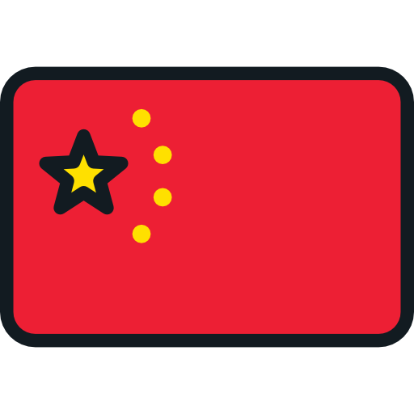
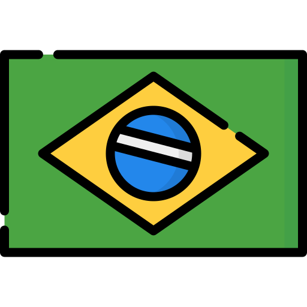
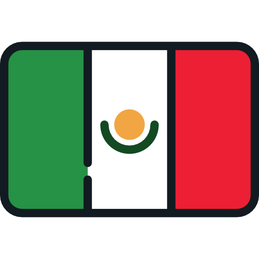
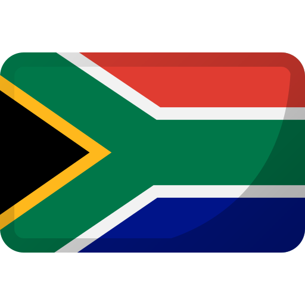
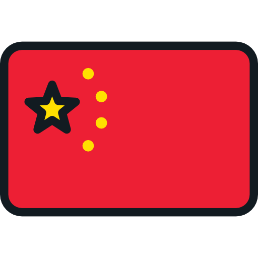
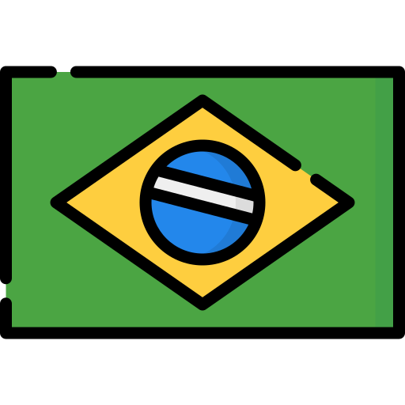
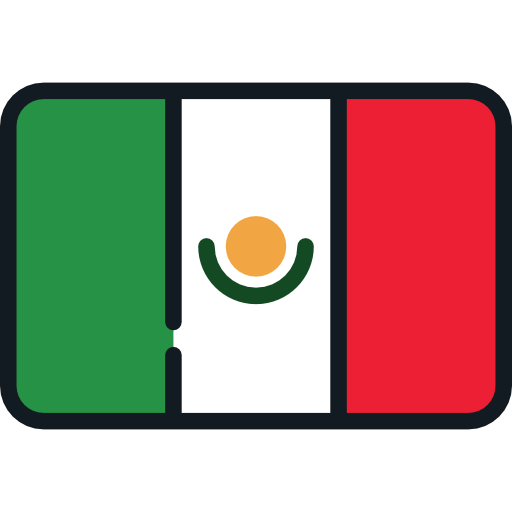
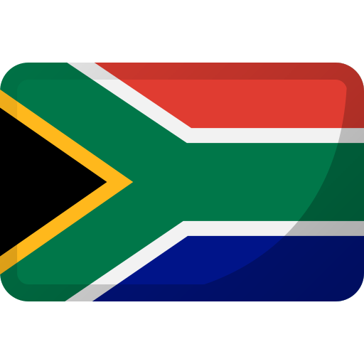